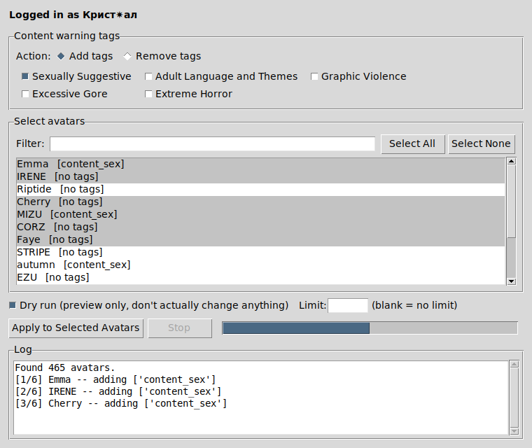

🏷️
Bulk content warnings
Apply or remove the five VRChat content warning tags across selected avatars.
Manage VRChat avatar content warnings and custom tags in one place. Bulk edit, preview changes, and get back to creating.
Available for macOS Apple Silicon, macOS Intel & Windows. No subscription.

Everything you need for organized avatar tagging without changing unrelated tags.
Apply or remove the five VRChat content warning tags across selected avatars.
Manage your own tags alongside content warnings, individually or in bulk.
Search your avatar list and choose exactly which avatars to change.
See the proposed changes before updating your account for real.
Stop a long bulk operation and skip previously completed avatar updates later.
Uses VRChat authentication with 2FA. Your session is saved locally for future runs.
All files come from the official GitHub Releases page for this open-source repository.
For Macs powered by Apple Silicon (M1, M2, M3, M4, and newer).
↓ Download DMGFor older Intel processor Macs. Includes a drag-and-drop DMG installer.
↓ Download DMGInstall with the custom Windows setup wizard, or choose the portable ZIP.
↓ Download SetupIf a direct file isn't available yet, check all GitHub releases. Builds are created by the repository's release workflow.
Open the downloaded DMG and drag VRChat Avatar Tagger into Applications. This is an unsigned, non-notarized community build. If macOS blocks your first launch, open System Settings → Privacy & Security and select Open Anyway only after verifying that you trust the downloaded app. To run from source instead, see the README.
Windows portable editionPrefer no installer? Download the Windows portable ZIP.
Privacy noteVRChat login information is used to authenticate with VRChat. On Mac, the app stores session and progress files in ~/Library/Application Support/VRChat Avatar Tagger. Never share these files.
Authenticate with VRChat and complete 2FA if prompted.
Search, select avatars, and choose which tags to add or remove.
Use Dry run first, then confirm the changes you want to make.
Free, open source, and designed for your own VRChat avatars.
Get VRChat Avatar Tagger ↓Built to make managing a VRChat avatar collection feel less repetitive and give creators a clearer way to review what they change.
Editing content-warning tags across lots of avatars one at a time can take too long. I wanted one place to search my avatars, select what matters, preview changes, and keep unrelated tags untouched.
The project uses Python and the community VRChat API library. Qt powers the desktop interface; PyInstaller and GitHub Actions package the macOS and Windows builds with their own installers.
Creator: Ksyusha (Ксюша). Follow my other projects and profiles from one place.